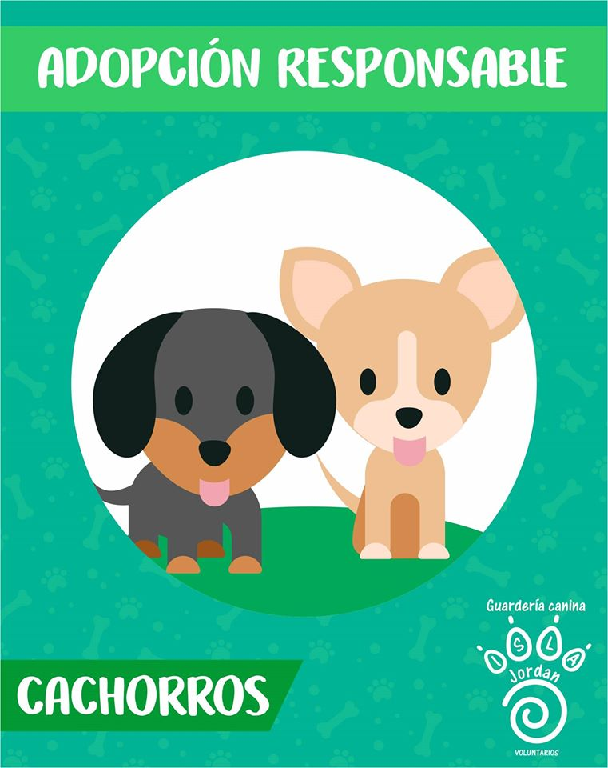

ADOPTAR

Equipo Refugio Isla Jordan Todos tiramos para el mismo lado. Vení a visitarnos para ver como trabajamos y saber más sobre nuestra fundación.
Hoy viven en el Refugio más de 200 animales. Muchos de ellos esperan un hogar y ese hogar puede ser el tuyo! Todos nuestros animales están vacunados, desparasitados y esterilizados, y te invitamos a que los conozcas: si estás pensando en adoptar un perro o un gato, ¡no te quedes solo con las fotos! Vení a visitarnos con tu familia, conocé a los perros y gatos en acción y con sus características particulares e interactuá con ellos. Tenemos algunos cachorritos que estarán felices de acompañar el crecimiento de una familia y otros más grandes que ya aprendieron dónde hacer sus necesidades: todos te estarán eternamente agradecidos y llenaran tu vida y la de tu familia de felicidad y amor incondicional.Nos encontramos en Cipolletti, Provincia de Río Negro.

Horario para venir a conocer y adoptarlos
| Lunes | Miércoles | Viernes | |
| JUAN | 15:00 hs | 16:00 hs | 15:00 hs |
| ANA | 9:00 hs | 11:00 hs | 10:00 hs |
| EXEQUIEL | 17:30 hs | 12:00 hs | 17:00 hs |